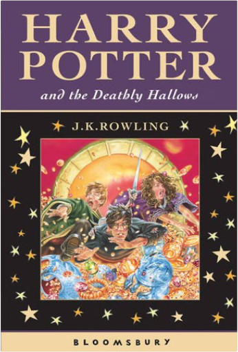
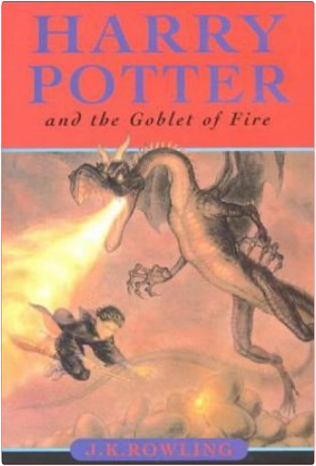
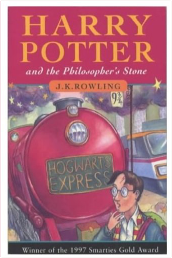
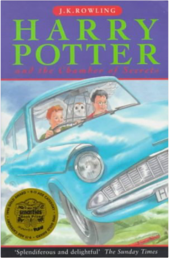
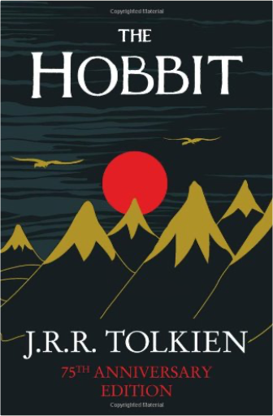

Harry Potter and the Deathly HallowsRowling, J. K. Rowling  Harry Potter is preparing to leave the Dursleys and Privet Drive for the last time. But the future that awaits him is full of danger, not only for him, but for anyone close to him - and Harry has already lost so much. Only by destroying Voldemort's remaining Horcruxes can Harry free himself and overcome the Dark Lord's forces of evil. In this dramatic conclusion to "The Harry Potter Series", Harry must leave his most loyal friends behind, and in a final perilous journey find the strength and the will to face his terrifying destiny: a deadly confrontation that is his alone to fight. In this thrilling climax to the phenomenally bestselling series, J.K. Rowling reveals all to her eagerly waiting readers. Harry Potter and the Goblet of Fire No 4J. K. Rowling From the back of the dust jacket: "The summer holidays are dragging on and Harry Potter can't wait for the start of the school year. It is his fourth year at Hogwarts School of Witchcraft and Wizardry, and there are spells to be learnt, potions to be brewed and Divination lessons (sigh) to be attended. Harry is expecting these: however, other quite unexpected events are already on the march ..." Harry Potter and the Philosopher's StoneJ. K. Rowling Harry Potter is an ordinary boy who lives in a cupboard under the stairs at his Aunt Petunia and Uncle Vernon's house, which he thinks is normal for someone like him who's parents have been killed in a 'car crash'. He is bullied by them and his fat, spoilt cousin Dudley, and lives a very unremarkable life with only the odd hiccup (like his hair growing back overnight!) to cause him much to think about. That is until an owl turns up with a letter addressed to Harry and all hell breaks loose! He is literally rescued by a world where nothing is as it seems and magic lessons are the order of the day. Read and find out how Harry discovers his true heritage at Hogwarts School of Wizardry and Witchcraft, the reason behind his parents mysterious death, who is out to kill him, and how he uncovers the most amazing secret of all time, the fabled Philosopher's Stone! All this and muggles too. Now, what are they? Harry Potter and the Chamber Of SecretsJ.K.; Michelle Radford (Cover Art) Rowling Traces d'usages, qq peu défraichi mais sinon bel ouvrage.Expédition rapide de votre commande avec protection soignée de vos articles.Professionnel de la vente à distance.Professional on e-business.Fast delivery of your order.Item very well packed(réf 21g ) The HobbitJ. R. R. Tolkien The classic bestseller behind this year's biggest movie, this definitive paperback edition features nine illustrations and two maps drawn by J.R.R. Tolkien, and a preface by Christopher Tolkien. Bilbo Baggins is a hobbit who enjoys a comfortable, unambitious life, rarely travelling further than the pantry of his hobbit-hole in Bag End. But his contentment is disturbed when the wizard, Gandalf, and a company of thirteen dwarves arrive on his doorstep one day to whisk him away on an unexpected journey 'there and back again'. They have a plot to raid the treasure hoard of Smaug the Magnificent, a large and very dangerous dragon! The prelude to The Lord of the Rings, The Hobbit has sold many millions of copies since its publication in 1937, establishing itself as one of the most beloved and influential books of the twentieth century. |
 Made with Delicious Library
Made with Delicious LibrarySpringfield, State zipflap congrotus delicious library Doddridge, Edward